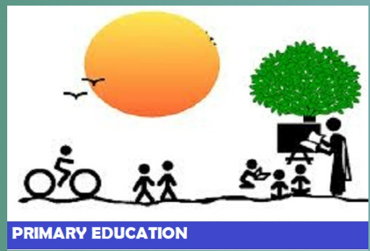
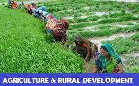
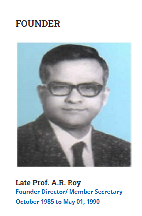
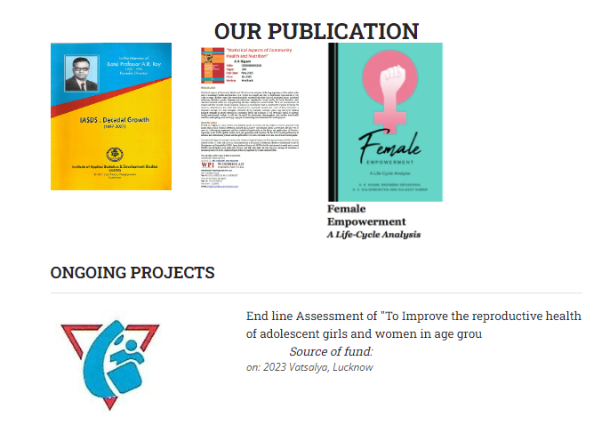
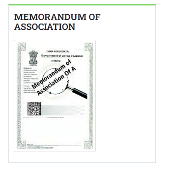

Institute of Applied Statistics & Development Studies[ I A S D S ]
( Registered under Societies’ Registration Act. 1860, Registration no. 3458/85-86 dated 26.10.1985 )

 |
 |  |  |
|  | Professor Anadi Ranjan Roy (1920-1990) took M.Sc. Degree in Pure Mathematics in 1942 and in Statistics in 1944, both from Calcutta University. After completing his postgraduate, he joined the Indian Council of Agricultural Research and rose to the position of Professor of Statistics there. During his stay at Calcutta, he had the privilege of being taught by Professor P.C. Mahalanobis, Professor R.C. Bose, and Professor P.K. Bose among others. Subsequently, he proceeded to USA for doctoral degree from Stanford University on a Fulbright Grant where he worked with several stalwarts including Professor Charles Stein, Herman Chernoff, and Meyer Girshick. His teachers and research associates/supervisors were highly impressed by his research work and potentials. In 1959, he joined the Department of Statistics, Lucknow University as Professor and Head and continued to hold the position till his retirement in 1980. | LEGAL STATUSRegistered: Under Societies Registration Act. 1860, Registration no. 3458/85-86, valid till 25.10.2025 PAN Card Details: AAATI0945C 12A: IASDS is registered under 12A of Income Tax - Registration No.AAATI0945CE20218 dated 23.09.2021 for Five Assessment year 2022-23 to 2026-27. 80 G Donation Exempted: IASDS is registered under 80G of Income Tax - Registration No.AAATI0945CF20190 dated 23.09.2021 for Five Assessment year 2022-23 to 2026-27. NITI AAYOG registration ID: UP/2012/0052417 DSIR: Recognized by DSIR vide letter no. 13/293/2016-TU-V dated 07/10/2016 |
||||||
|  |  |
TestimonialsI am glad that IASDS will give such a strong emphasis to the role of primary health care as a route to equity, prosperity, and social stability. These are the larger rewards of better health.C M PANDEY PRESIDENT (ELECT) INTERNATIONAL EPIDEMIOLOGICAL ASSOCIATION, NORTH CAROLINA |
WHY CHOOSE US?Strives to generate statistical thinking and synthesize statistical sciences among other sciences in organizations engaged in development research so as to emerge with sound knowledge of implementable recommendations. Endeavors in capacity building of such organizations by advising them to use modern and appropriate statistical tools for evidence based, scalable and replicable outcomes. Conducts research studies, in-service training programs, provides consultancy, organises workshops on themes of global importance for other research organizations. Proves its merit by successfully intertwining statistical sciences in diversified areas like Primary Education, Agriculture & Rural Development, Health, Nutrition, HIV/AIDS, Urban Infrastructure Development including Water supply, Sanitation and Drainage, Waste Management, Hygiene and Socio-economic aspects. |
>
|||||
HOME
|
OUR WORK
|
LOCATION
1st Floor, 1/220 Virat Khand,
|
FIND US ON:CALL US ON:+91-522-2304849 |
© 1985 - 2019 Institute of Applied Statistics & Development Studies[ I A S D S ] - All Rights |
Contact us | Privact policy |